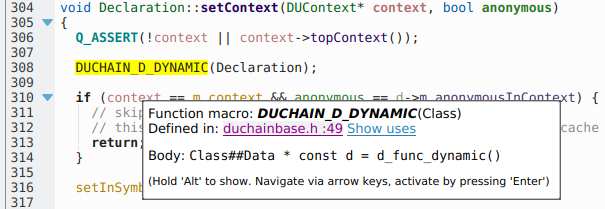

KDevelop
A cross-platform IDE for C, C++, Python, QML/JavaScript and PHP
Available for Linux, Windows and macOS
Download
Features
KDevelop is a Feature-Packed Integrated Development Environment
KDevelop is a fully-featured Integrated Development Environment, perfect for C and C++ projects and other supported languages. It has great code completion and project support, along with documentation integration that keeps you close to where you're editing code.
Understand your code better with remarkable code comprehension
KDevelop parses your project on the fly to give you accurate code completion. C/C++, Objective-C, and QML have first-class support in KDevelop!
Program in every language
KDevelop has great support for C and C++, Objective-C and QML. It even supports some parts of Qt's dialect. Python and PHP have optional plugins enabling better support.
KDevelop has support for CMake and QMake as well.
Work on multiple projects simultaneously
KDevelop is a fantastic multi-project IDE, open multiple projects inside of one session and decide the order in which they can be built. KDevelop is a good fit for large scale software projects like KDE or Qt where development happens across several inter-connected frameworks and libraries. KDevelop also has a Git plugin, enabling you to work with an easy to use Git interface, to keep all of your projects up to date easily.

Check again with documentation integration
Forgot what strcmp
returns? Need to check Qt documentation quickly without the help of a search
engine? KDevelop can show you Qt documentation, CMake help pages, and Man pages
directly from the editor!
Plugins
KDevelop is very extensible, such as enabling Clang-Tidy, Heaptrack and Perforce support.